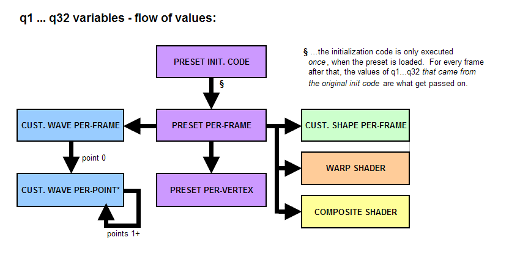
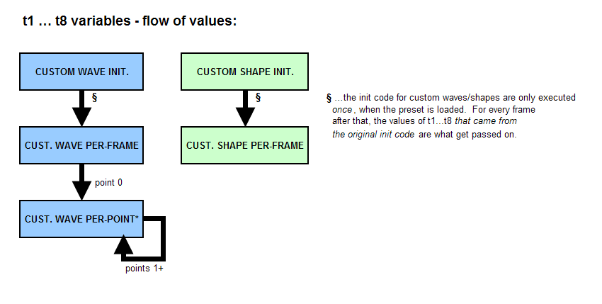

MILKDROP preset authoring guide
return to milkdrop.html
* * *
Note that there is another, quite comprehensive, Preset Authoring Guide
available on the web at http://www.milkdrop.co.uk/, which is continually
updated and expanded through the hard work of a few dedicated preset
authors. Whereas this guide (the one you are currently viewing) gives the bare
technical specifications for writing your own presets, the guide at milkdrop.co.uk
'starts at the beginning' and walks you through all of the mathematics and subtleties
of 'rolling your own', explaining things in great detail. The guide at milkdrop.co.uk
is very highly recommended to anyone who wishes to learn more about creating their
own presets.
* * *
Section Listing
-----------------------
1. about presets
2. preset authoring - basic
3. preset authoring - advanced
a. per-frame equations
b. per-vertex equations
c. variable pools, declaring your own variables, persistence of values
d. preset init code; carrying values between variable pools, using q1-q32
e. custom shapes & waves
f. pixel shaders
conceptual overview
the WARP shader
the COMPOSITE shader
pixel shader reference
intrinsic instructions
per-vertex shader inputs
per-frame shader inputs
texture sampling
milkdrop's built-in textures - main, blur, and noise
blur1, blur2, blur3
noise textures
reading textures from disk
random texture selection
misc. cool shader tricks
quality assurance for shaders
g. quality assurance
h. debugging
i. function reference (for expressions, not shaders)
1. About Presets
-----------------------
When you watch MilkDrop, you are watching a series of Presets. Each
one has its own look and feel, draws the sound waves in a particular
way, and has certain motions to it. After some time, you will see
a short blend transition, and then you will be watching a new preset.
A single 'preset' is a collection of parameters that tell MilkDrop how
to draw the wave, how to warp the image around, and so on. MilkDrop
ships with over 100 built-in presets, each one having a distinct
look and feel to it.
Using MilkDrop's built-in "preset-editing menu" (the M key), you can
edit presets on the fly, on-screen, from within the program. You can
make slight adjustments to existing presets, then save over them;
or you can change lots of things, so the preset doesn't look anything
like the original, and then save it under a new name. You can even
write insane new mathematical equations, of your own imagination,
into your preset files and come up with things that MilkDrop has never
done before!
Each preset is saved as a file with the ".milk" extension, so you can
easily send them to your friends or post them on the web. You can also
go to http://www.nullsoft.com/free/milkdrop and then jump to the
"preset sharing forum" to see what other people have come up with,
or post your own cool, new presets. milkdrop.co.uk/ is another great
place to download collections of presets made by others like yourself.
2. Preset Authoring - Basic
-----------------------
You can edit the properties of the current preset by hitting 'M',
which brings up the "preset-editing menu". From this menu you
can use the up and down arrow keys to select an item. Press
the RIGHT arrow key to move forward through the menu and select
the item (note: you can also hit SPACE or RETURN to do this);
***press the LEFT arrow key to go back to the previous menu.***
Pressing 'M' while the menu is already showing will hide the menu;
pressing ESCAPE will do the same thing. Press 'M' again to bring
the menu back.
Once you've reached an item on the menu whose value can be edited,
use the UP and DOWN arrow keys to increase or decrease its value,
respectively. Changes will register immediately. Use PAGE UP and
PAGE DOWN to increase the value more quickly. Hold down SHIFT
and use the UP/DOWN arrow keys to change the value very slowly.
Hit RETURN To keep the new value, or ESC to abort the change.
If the item you're editing is a text string, you can use the
arrow keys to move around. The Insert key can be used to toggle
between insert and overtype modes. You can hold shift and use
the arrow keys (home, end, left, right) to make a selection,
which will be identified by brackets []. You can then use CTRL-C
or CTRL-X to copy or cut text. CTRL-P pastes. When finished
editing, hit RETURN To keep the new string, or ESC to abort the
change.
You'll want to get into the habit of using SCROLL LOCK whenever
you're making changes to a preset that you intend to save;
otherwise, MilkDrop is sure to move you along to a new (random)
preset, over time. When the menus are showing, the preset is
automatically temporarily locked, but BE CAREFUL - if you're not
also using SCROLL LOCK, then 0.1 seconds after you hide the menu
to take a look at your new masterpiece, MilkDrop might load a
random new preset on you, and you'd lose your changes! And you
might then ask me: "how large is large?" And I will tell you:
"thirty."
There are also some hotkeys that will allow you to change certain
common parameters to the current preset. These are listed below.
MOTION
i/I - zoom in/out
[ / ] - push motion to the left/right (dx)
{ / } - push motion up/down (dy)
< / > - rotate left/right (rot)
o/O - shrink/grow the amplitude of the warp effect
WAVEFORM
W - cycle through waveforms
j/J - scale waveform down/up
e/E - make the waveform more transparent/more solid
BRIGHTNESS **
g/G - decrease, increase gamma (brightness) **
VIDEO ECHO effect **
q/Q - scale 2nd graphics layer down/up **
F - flip 2nd graphics layer (cycles through 4 fixed orientations) **
** these keys only have an effect if you are running a
MilkDrop 1-era preset. In MilkDrop 2-era presets,
these values are embedded in the shader, so you need
to go into the composite shader and tweak the code.
3. Preset Authoring - Advanced
-----------------------
This section describes how to use the 'per-frame' and 'per-vertex'
equations to develop unique new presets.
a. PER-FRAME EQUATIONS
----------------------
When you hit 'm' to show the preset-editing menu, several items
show up. If you explore the sub-menus, you'll see that
all of the properties that make up the preset you're currently
viewing are there. The values you can specify here (such as
zoom amount, rotation amount, wave color, etc.) are all static
values, meaning that they don't change in time. For example,
take the 'zoom amount' option under the 'motion' submenu.
If this value is 1.0, there is no zoom. If the value is 1.01,
the image zooms in 1% every frame. If the value is 1.10, the
image zooms in 10% every frame. If the value is 0.9, the image
zooms out 10% every frame; and so on.
However, presets get far more interesting if you can take these
parameters (such as the zoom amount) and animate them (make them
change over time). For example, if you could take the 'zoom
amount' parameter and make it oscillate (vary) between 0.9 and
1.1 over time, the image would cyclically zoom in and out, in
time.
You can do this - by writing 'per-frame' and 'per-vertex'
equations. Let's start with 'per-frame' equations. These are
executed once per frame. So, if you were to type the following
equation in:
zoom = zoom + 0.1*sin(time);
...then the zoom amount would oscillate between 0.9 and 1.1
over time. (Recall from your geometry classes that sin()
returns a value between -1 and 1.) The equation says: "take
the static value of 'zoom', then replace it with that value,
plus some variation." This particular equation would oscillate
(cycle) every 6.28 seconds, since the sin() function's
period is 6.28 (PI*2) seconds. If you wanted it to make it
cycle every 2 seconds, you could use:
zoom = zoom + 0.1*sin(time*3.14);
Now, let's say you wanted to make the color of the waveform
(sound wave) that gets plotted on the screen vary through time.
The color is defined by three values, one for each of the main
color components (red, green, and blue), each in the range 0 to 1
(0 is dark, 1 is full intensity). You could use something like this:
wave_r = wave_r + 0.5*sin(time*1.13);
wave_g = wave_g + 0.5*sin(time*1.23);
wave_b = wave_b + 0.5*sin(time*1.33);
It's nice to stagger the frequencies (1.13, 1.23, and 1.33) of
the sine functions for the red, green, and blue color components
of the wave so that they cycle at different rates, to avoid them
always being all the same (which would create a greyscale wave).
Here is a full list of the variables available for writing per-frame
equations:
NAME WRITABLE? RANGE DESCRIPTION
---- --------- ----- -----------
zoom yes >0 controls inward/outward motion. 0.9=zoom out 10% per frame, 1.0=no zoom, 1.1=zoom in 10%
zoomexp yes >0 controls the curvature of the zoom; 1=normal
rot yes controls the amount of rotation. 0=none, 0.1=slightly right, -0.1=slightly clockwise, 0.1=CCW
warp yes >0 controls the magnitude of the warping; 0=none, 1=normal, 2=major warping...
cx yes 0..1 controls where the center of rotation and stretching is, horizontally. 0=left, 0.5=center, 1=right
cy yes 0..1 controls where the center of rotation and stretching is, vertically. 0=top, 0.5=center, 1=bottom
dx yes controls amount of constant horizontal motion; -0.01 = move left 1% per frame, 0=none, 0.01 = move right 1%
dy yes controls amount of constant vertical motion; -0.01 = move up 1% per frame, 0=none, 0.01 = move down 1%
sx yes >0 controls amount of constant horizontal stretching; 0.99=shrink 1%, 1=normal, 1.01=stretch 1%
sy yes >0 controls amount of constant vertical stretching; 0.99=shrink 1%, 1=normal, 1.01=stretch 1%
wave_mode yes 0,1,2,3,4,5,6,7 controls which of the 8 types of waveform is drawn
wave_x yes 0..1 position of the waveform: 0 = far left edge of screen, 0.5 = center, 1 = far right
wave_y yes 0..1 position of the waveform: 0 = very bottom of screen, 0.5 = center, 1 = top
wave_r yes 0..1 amount of red color in the wave (0..1),
wave_g yes 0..1 amount of green color in the wave (0..1)
wave_b yes 0..1 amount of blue color in the wave (0..1)
wave_a yes 0..1 opacity of the wave (0..1) [0=transparent, 1=opaque]
wave_mystery yes -1..1 what this parameter does is a mystery. (honestly, though, this value does different things for each waveform; for example, it could control angle at which the waveform was drawn.)
wave_usedots yes 0/1 if 1, the waveform is drawn as dots (instead of lines)
wave_thick yes 0/1 if 1, the waveform's lines (or dots) are drawn with double thickness
wave_additive yes 0/1 if 1, the wave is drawn additively, saturating the image at white
wave_brighten yes 0/1 if 1, all 3 r/g/b colors will be scaled up until at least one reaches 1.0
ob_size yes 0..0.5 thickness of the outer border drawn at the edges of the screen every frame
ob_r yes 0..1 amount of red color in the outer border
ob_g yes 0..1 amount of green color in the outer border
ob_b yes 0..1 amount of blue color in the outer border
ob_a yes 0..1 opacity of the outer border (0=transparent, 1=opaque)
ib_size yes 0..0.5 thickness of the inner border drawn at the edges of the screen every frame
ib_r yes 0..1 amount of red color in the inner border
ib_g yes 0..1 amount of green color in the inner border
ib_b yes 0..1 amount of blue color in the inner border
ib_a yes 0..1 opacity of the inner border (0=transparent, 1=opaque)
mv_r yes 0..1 amount of red color in the motion vectors
mv_g yes 0..1 amount of green color in the motion vectors
mv_b yes 0..1 amount of blue color in the motion vectors
mv_a yes 0..1 opacity of the motion vectors (0=transparent, 1=opaque)
mv_x yes 0..64 the number of motion vectors in the X direction
mv_y yes 0..48 the number of motion vectors in the Y direction
mv_l yes 0..5 the length of the motion vectors (0=no trail, 1=normal, 2=double...)
mv_dx yes -1..1 horizontal placement offset of the motion vectors
mv_dy yes -1..1 vertical placement offset of the motion vectors
decay yes 0..1 controls the eventual fade to black; 1=no fade, 0.9=strong fade, 0.98=recommended
gamma yes >0 controls display brightness; 1=normal, 2=double, 3=triple, etc.
echo_zoom yes >0 controls the size of the second graphics layer
echo_alpha yes >0 controls the opacity of the second graphics layer; 0=transparent (off), 0.5=half-mix, 1=opaque
echo_orient yes 0,1,2,3 selects an orientation for the second graphics layer. 0=normal, 1=flip on x, 2=flip on y, 3=flip on both
darken_center yes 0/1 if 1, help keeps the image from getting too bright by continually dimming the center point
wrap yes 0/1 sets whether or not screen elements can drift off of one side and onto the other
invert yes 0/1 inverts the colors in the image
brighten yes 0/1 brightens the darker parts of the image (nonlinear; square root filter)
darken yes 0/1 darkens the brighter parts of the image (nonlinear; squaring filter)
solarize yes 0/1 emphasizes mid-range colors
monitor yes any set this value for debugging your preset code; if you hit the 'N' key,
the value of 'monitor' will be posted in the upper-right corner of milkdrop.
for example, setting "monitor = q3;" would let you keep an eye on q3's value.
time NO >0 retrieves the current time, in seconds, since MilkDrop started running
fps NO >0 retrieves the current framerate, in frames per second.
frame NO retrieves the number of frames of animation elapsed since the program started
progress NO 0..1 progress through the current preset; if preset was just loaded, this is closer to 0; if preset is about to end, this is closer to 1.
-note that if Scroll Lock is on, 'progress' will freeze!
bass NO >0 retrieves the current amount of bass. 1 is normal; below ~0.7 is quiet; above ~1.3 is loud bass
mid NO >0 -same, but for mids (middle frequencies)
treb NO >0 -same, but for treble (high) frequencies
bass_att NO >0 retrieves an attenuated reading on the bass, meaning that it is damped in time and doesn't change so rapidly.
mid_att NO >0 -same, but for mids (middle frequencies)
treb_att NO >0 -same, but for treble (high) frequencies
meshx NO 8-128 tells you the user's mesh size in the X direction. always an integer value.
meshy NO 6-96 tells you the user's mesh size in the Y direction. always an integer value.
pixelsx NO 16-4096 width of the viz window, in pixels. If Canvas Stretch is on, this is the pre-stretched size. (same as "texsize.x" for shaders)
pixelsy NO 16-4096 height of the viz window, in pixels. If Canvas Stretch is on, this is the pre-stretched size. (same as "texsize.y" for shaders)
aspectx NO >0 multiply an x-coordinate by this to make the preset look the same at any aspect (window height:width) ratio.
-value: if widescreen, 1; if window is tall, h/w.
aspecty NO >0 multiply a y-coordinate by this to make the preset look the same at any aspect (window height:width) ratio.
-value: if widescreen, w/h; if window is tall, 1.
blur1_min yes 0..1 Normally these are set to 0 (min) and 1 (max).
blur2_min yes 0..1 You can clamp the values in the blur texture to a tighter
blur3_min yes 0..1 range, though.
blur1_max yes 0..1 This will increase the precision in the blur textures,
blur2_max yes 0..1 but you run the risk of clamping values to your min/max.
blur3_max yes 0..1 If you use the GetBlur1() .. GetBlur3() functions to sample
blur1_edge_darken yes 0..1 the blur texture, they will automatically "unpack" the
values for you in the end!
q1 yes any } Used to carry values along a chain
q2 yes any } from the preset init code,
q3 yes any } to the preset per-frame code, then on
q4 yes any } to the preset per-vertex code;
q5 yes any } or to the custom shape per-frame code,
q6 yes any } or to the custom wave per-frame code,
q7 yes any } then to the custom wave per-vertex code;
... } or to the [pixel] shader code.
q31 yes any } Click here to see a diagram for the Q vars.
q32 yes any }
Some of the variables are read-only, meaning that you shouldn't change
their values them through the equations. You can; it won't stop you;
but the results are unpredictable.
You can also make up to 30 of your own variables. For example:
my_volume = (bass + mid + treb)/3;
zoom = zoom + 0.1*(my_volume - 1);
This would make the zoom amount increase when the music is loud,
and decrease when the music is quiet.
HOWEVER, custom variables do not carry over from per-frame equations
to per-vertex equations; if you set a custom variable's value in the
per-frame equations, and try to read it in the per-vertex equations,
you will not get the correct value. Instead, you have to "bridge the
gap" using 32 special variables: q1 through q32. This is usually only
used when you want to precompute some custom values in the per-frame
equations for later use in the per-vertex equations (or for use in
the pixel shaders). For a good example of this, see the 'dynamic swirls'
preset. See below for more information on q1-q32.
b. PER-VERTEX EQUATIONS
-----------------------
So far we've discussed only how to change parameters based on
time. What if you wanted to also vary a parameter, such as the
zoom amount, in different ways, for different locations on the
screen? For example, normally, the result of the 'zoom' parameter
is to just do a flat zoom. This doesn't look very realistic,
because you don't see any perspective in the zoom. It would be
better if we could give a unique zoom amount to each pixel on
the screen; we could make the pixels far away from the center
zoom more, and this would give it more perspective. In order
to do this, we use "per-vertex" equations, instead of per-frame
equations.
The code for this per-vertex equation is simple:
zoom = zoom + rad*0.1;
Where 'rad' is the radius of the pixel if it were cast into
polar coordinates; from another perspective, 'rad' is the distance
of the pixel from the center of the screen. 'rad is zero at the
center, and 1 at the corners. So if we run the above code,
the image will be zoomed into 10% more at the edges of the screen
than at the center.
The per-vertex equations are really just like the per-frame equations,
except for a variables. The following variables are available
exclusively to per-vertex equations (and not to per-frame equations):
NAME WRITEABLE? RANGE DESCRIPTION
---- ---------- ----- -----------
x NO 0..1 retrieves the x-position of the current pixel. At the very left edge of the screen this would be 0; in the middle, 0.5; and at the right, 1.
y NO 0..1 retrieves the y-position of the current pixel. At the very top edge of the screen this would be 0; in the middle, 0.5; and at the bottom, 1.
rad NO 0..1 retrives the distance of the pixel from the center of the screen. At the center of the screen this will be zero, and at the corners, 1.
(The middle of the edges will be 0.707 (half of the square root of 2).
ang NO 0..6.28 retrieves the angle of the current pixel, with respect to the center of the screen.
If the point is to the right of the center, this is zero; above it, it is PI/2 (1.57); to the left, it is PI (3.14); and below, it is 4.71 (PI*3/2).
If it is just a dab below being directly to the right of the center of the screen, the value will approach 6.28 (PI*2).
(note: this is simply the arctangent of y over x, precomputed for you.)
zoom yes >0 controls inward/outward motion. 0.9=zoom out 10% per frame, 1.0=no zoom, 1.1=zoom in 10%
zoomexp yes >0 controls the curvature of the zoom; 1=normal
rot yes controls the amount of rotation. 0=none, 0.1=slightly right, -0.1=slightly clockwise, 0.1=CCW
warp yes >0 controls the magnitude of the warping; 0=none, 1=normal, 2=major warping...
cx yes 0..1 controls where the center of rotation and stretching is, horizontally. 0=left, 0.5=center, 1=right
cy yes 0..1 controls where the center of rotation and stretching is, vertically. 0=top, 0.5=center, 1=bottom
dx yes controls amount of constant horizontal motion; -0.01 = move left 1% per frame, 0=none, 0.01 = move right 1%
dy yes controls amount of constant vertical motion; -0.01 = move up 1% per frame, 0=none, 0.01 = move down 1%
sx yes >0 controls amount of constant horizontal stretching; 0.99=shrink 1%, 1=normal, 1.01=stretch 1%
sy yes >0 controls amount of constant vertical stretching; 0.99=shrink 1%, 1=normal, 1.01=stretch 1%
time NO >0 retrieves the current time, in seconds, since MilkDrop started running
fps NO >0 retrieves the current framerate, in frames per second.
frame NO retrieves the number of frames of animation elapsed since the program started
progress NO 0..1 progress through the current preset; if preset was just loaded, this is closer to 0; if preset is about to end, this is closer to 1.
-note that if Scroll Lock is on, 'progress' will freeze!
bass NO >0 retrieves the current amount of bass. 1 is normal; below ~0.7 is quiet; above ~1.3 is loud bass
mid NO >0 -same, but for mids (middle frequencies)
treb NO >0 -same, but for treble (high) frequencies
bass_att NO >0 retrieves an attenuated reading on the bass, meaning that it is damped in time and doesn't change so rapidly.
mid_att NO >0 -same, but for mids (middle frequencies)
treb_att NO >0 -same, but for treble (high) frequencies
meshx NO 8-192 tells you the user's mesh size in the X direction. always an integer value.
meshy NO 6-144 tells you the user's mesh size in the Y direction. always an integer value.
pixelsx NO 16-4096 width of the viz window, in pixels. If Canvas Stretch is on, this is the pre-stretched size. (same as "texsize.x" for shaders)
pixelsy NO 16-4096 height of the viz window, in pixels. If Canvas Stretch is on, this is the pre-stretched size. (same as "texsize.y" for shaders)
aspectx NO >0 multiply an x-coordinate by this to make the preset look the same at any aspect (window height:width) ratio.
-value: if widescreen, 1; if window is tall, h/w.
aspecty NO >0 multiply a y-coordinate by this to make the preset look the same at any aspect (window height:width) ratio.
-value: if widescreen, w/h; if window is tall, 1.
q1 yes any } Used to carry values along a chain
q2 yes any } from the preset init code,
q3 yes any } to the preset per-frame code, then on
q4 yes any } to the preset per-vertex code;
q5 yes any } or to the custom shape per-frame code,
q6 yes any } or to the custom wave per-frame code,
q7 yes any } then to the custom wave per-vertex code;
... } or to the [pixel] shader code.
q31 yes any } Click here to see a diagram for the Q vars.
q32 yes any }
The main reason for distinction between per-frame and per-vertex equations
is simple: SPEED. If you have a per-vertex equation that doesn't make use
of the x, y, rad, or ang variables, then there's no reason for it to be
executed per-vertex; it could be executed once per frame, and the result
would be the same. So, here's a maxim to write on the wall:
"If a per-vertex equation doesn't use at least one of the variables
{ x, y, rad, ang }, then it should be actually be a per-frame
equation."
You might be wondering how on earth all these formulas could be computed
for every pixel on the screen, every frame, and still yield a high frame
rate. Well, that's the magic of the hamster. And the fact that it really
does the processing only at certain points on the screen, then interpolates
the results across the space between the points. In the config panel,
the "mesh size" option defines how many points (in X and Y) there are at
which the per-vertex equations are actually computed. When you crank this
option up, you start eating up CPU cycles rather quickly.
c. VARIABLE POOLS; DECLARING YOUR OWN VARIABLES; PERSISTENCE OF VALUES
-----------------------
Declaring and using your own variables is easy - in some bit of code
(init equations, per-frame equations, etc.) you just write something like
the following:
billy = 5.3;
This creates a variable called 'billy' and sets its value to 5.3. You can
then freely read and/or modify the value of 'billy' within that section
of code.
However, sometimes it is desireable to create (really, initialize) a variable
in an "init" equations, then use and/or update it in the "per-frame" equations.
You can always do this, because paired init and per-frame equations
share the same variable pool. In addition, the values of user-defined
variables will persist from frame to frame.
There are three variable "pools" in MilkDrop:
1. preset init code + preset per-frame code
2. custom wave init + custom wave per-frame code
3. custom shape init + custom shape per-frame code
So, you can probably guess that if you declare a variable in the preset
init code, you can then read it in the preset per-frame code. You can
also write to it (update it), and its value will persist to the next
frame. All three pools work this way.
As explained, though, you can't read the value of 'billy' in when in another
variable pool. (This is intentional, and keeps MilkDrop running nice and
fast.) If you want to pass values around between variable pools, you need
to use a set of special variables: q1, q2, q3, etc. on up to q32. See
the next section for details on how they work and how to properly use them.
Just remember: the Q variables (and later, the T variables) are the only ones
that you can use to "jump" between (carry values between) variable pools.
You might notice that there are two other types of equations that weren't
listed above. They are:
* preset per-vertex code
* custom wave per-point code
For these two code sections, persistent values don't really make sense,
because there is no way to properly initialize them. Any user-defined
variables in these code sections should just be treated as scratch
variables, not persisting from frame to frame, from vertex to vertex,
or from point to point (even though technically, they will... but it
probably won't be what you want). The only thing that really makes sense
here is when you want to carry values along from point to point as
you run the custom wave per-point code; to do this, use q1-q32. (See
the next section for a more detailed explanation.)
d. PRESET INIT CODE; CARRYING VALUES BETWEEN VARIABLE POOLS, USING q1-q32
-----------------------
As we've just seen, you can't normally pass values around between variable
pools. However, there is one mechanism for bridging this gap: the 'Q'
variables. They are named q1, q2, q3, and so on, through q32. Their
main function is to bridge the gap between various variable pools.
In MilkDrop 1.03 and later, you can write code that is executed only once,
when a preset is loaded (switched to). This 'preset initialization' code
does two useful things:
1. It allows you to set the initial value of your own (user-defined)
variables (such as 'my_variable'), as just explained.
2. It allows you to write the default ("sticky") values for q1, q2, q3...
through q32. Whatever these values end up at after the init code,
those are the values that q1-q32 will be reset to at the start of
each frame (...the input to the per-frame equations). If the
per-frame equations change the values of q1-q32, those new values will
propagate on to other variable pools (see the diagram below), but on
the next frame, the values will be reset to the original "sticky"
defaults.
See the flow chart below for a brief, and complete, glance at how the values
of the Q variables flow throughout MilkDrop.

Let's walk through the flow of the chart.
If you write to the values of q1..q32 from the "preset init code", the values
you write will become the new 'base values' to which q1..q32 are initialized
at the start of each frame, for the per-frame code. So when you access (read)
q1-q32 in the per-frame code, you'll get the values that were *initially* set -
over and over, every frame. You can then modify them (or not) in the per-frame
code, and the (possibly modified values) will then be readable by the per-vertex
code - as well as by all pixel shader code, and others. However, any modified
values will not persist to the next frame; they will be reset again, at the
start of the next frame, to the values they had at the end of the preset init
code.
In the per-vertex code, the q1-q32 values start (for the first vertex
in any frame) as the values they had at the end of the per-frame code. If you
modify q1-q32 in the per-vertex code, those modified values will carry over
from vertex to vertex. (This isn't a very desireable effect; you should avoid
writing to the Q variables from the per-vertex equations.) Next frame, they
will be reset to whatever value they had at the end of the [next frame's
execution of the] per-frame code. (It's all in the diagram... look at that,
and you'll just get it.)
There is one trick here. You might notice that the custom wave/shape
init boxes are missing from the diagram. That's because the q
variables coming out of them don't go anywhere. The Q values that come
into the per-frame wave/shape equations come from the preset per-frame
equations, as you can see. But, just to humor you: in the wave/shape init code,
the Q values coming in are the results from the preset init code. Any Q values
you write to there (in the wave/shape init code) will be meaningless; although
you can write to (initialize) your own custom variables, and read those in
later, in the wave/shape per-frame equations! So, really, you can still route
data that way, if you really want to.
Side note: when you edit the preset init code and apply it (by hitting
CTRL+ENTER), the init code will re-execute immediately. However, when you
edit the regular per-frame/per-vertex code and hit CTRL+ENTER, the preset init
code will NOT be re-executed; the results of the last execution will persist.
If you change per-frame/per-vertex code and want to re-execute the initialization
code (i.e. to randomize it or reset the preset), you'll have to save the preset
and then re-load it.
(Historical note: nothing here has changed since MilkDrop 1; these diagrams were
just re-designed to be much simpler to read. Actually, there was a bug in
the old diagrams that is now fixed: on frame 0, they showed the Q values
going straight from the (frame 0!?) per-frame code, into the custom
wave/shape init code. On frame 0, those Q values actually come straight from
the preset init code. HOWEVER, they are virtually useless, as discussed above.)
e. CUSTOM SHAPES AND WAVES
----------------------
As of MilkDrop 1.04, two new features are available: custom shapes, and custom
waves. A preset can have up to 4 of each.
With custom shapes, you can draw an n-sided shape (with 3-100 sides) anywhere
on the screen, at any angle and size, in any color, and at any opacity. You
even have the option to map the previous frame's image onto the shape, which
makes for some incredible possibilities (such as realtime hardware fractals -
see the 'Geiss - Feedback' preset). You can also write per-frame code to
control all of these things about the shape(s). This way, they can react to
the audio or change over time - whatever you can imagine. You are limited to
four custom shapes per preset, however, each one of those can be instanced,
which lets you draw a huge number (up to 1024) of them each frame, if you
want to, and each one can be totally different (as long as the value of
the 'instance' variable ends up influencing the other properties).
With custom waves, you can draw the waveform (or the frequency spectrum)
wherever, whenever, and however you want; a great addition since MilkDrop
1.03, where only the built-in waveforms were possible. With custom waves
you can also write per-frame code to control the waves, and per-point code
to place every point (or line segment) on the wave exactly where you want,
and in exactly the color you want, and so on.
Remember those q1-q32 variables that were committed at the end of the preset
initialization code, then reset (to those values) at the beginning of each
frame, and then (potentially) modified in the preset per-frame code? Those
(potentially modified) values of q1-q32 - as they were at the end of the
preset's per-frame code, each frame - are piped into the custom wave & custom
shape per-frame code. So if you read 'q3' in the custom wave per-frame
code, what you're really reading is the value of 'q3' as it was left at the
end of this frame's per-frame code. Again, see the q_vars.gif image
for a diagram of the flow of the values of the q1-q32 varibles.
For custom waves and shapes, you can modify q1-q32, if you like, in the per-
frame equations. As usual, the values of the Q variables will not persist
from frame to frame, though - they are reset on each new frame, to match
the values they had at the end of the *preset's* per-frame code, this frame.
For custom waves, you also have one more link in the chain: per-point
(aka per-vertex) code. This code is executed once for each data point in the
waveform. The initial values of q1-q32 coming in (for the first point)
are the values that stood at the end of the custom wave per-frame code,
this frame. If you then modify q1-q32 in the per-point code (or even if you
don't), the values will pass on to the next point. You could, for example,
smooth out a waveform using this.
THE 'T' VARIABLES
----------------------
There are 8 additional variables available for custom waves and shapes:
t1-t8. These are very similar to the Q variables, but they exist only
for custom waves & shapes. To see how the data flows from variable pool
to variable pool for the T vars, take a look at the diagram below. Like
the Q variables, they exist to help you bridge some gaps between variable
pools. However, the T variables are a bit simpler to understand than the
Q's. The diagram below should explain it all.

CUSTOM SHAPE PER-FRAME VARIABLES
----------------------
NAME WRITABLE? RANGE DESCRIPTION
---- --------- ----- -----------
num_inst no 1-1024 The total # of instances (the number of times to repeat the per-frame equations for, & draw, this shape).
instance no 0..num_inst-1 The current instance number that the equations are being executed for.
sides yes 3-100 the default number of sides that make up the polygonal shape
thick yes 0/1 if ON, the border will be overdrawn 4X to make it thicker, bolder, and more visible
additive yes 0/1 if ON, the shape will add color to sature the image toward white; otherwise, it will replace what's there.
x yes 0..1 default x position of the shape (0..1; 0=left side, 1=right side)
y yes 0..1 default y position of the shape (0..1; 0=bottom, 1=top of screen)
rad yes 0+ default radius of the shape (0+)
ang yes 0..6.28 default rotation angle of the shape (0...2*pi)
textured yes 0/1 if ON, the shape will be textured with the image from the previous frame
tex_zoom yes >0 the portion of the previous frame's image to use with the shape
tex_ang yes 0..6.28 the angle at which to rotate the previous frame's image before applying it to the shape
r yes 0..1 default amount of red color toward the center of the shape (0..1)
g yes 0..1 default amount of green color toward the center of the shape (0..1)
b yes 0..1 default amount of blue color toward the center of the shape (0..1)
a yes 0..1 default opacity of the center of the shape; 0=transparent, 1=opaque
r2 yes 0..1 default amount of red color toward the outer edge of the shape (0..1)
g2 yes 0..1 default amount of green color toward the outer edge of the shape (0..1)
b2 yes 0..1 default amount of blue color toward the outer edge of the shape (0..1)
a2 yes 0..1 default opacity of the outer edge of the shape; 0=transparent, 1=opaque
border_r yes 0..1 default amount of red color in the shape's border (0..1)
border_g yes 0..1 default amount of green color in the shape's border (0..1)
border_b yes 0..1 default amount of blue color in the shape's border (0..1)
border_a yes 0..1 default opacity of the shape's border; 0=transparent, 1=opaque
time NO >0 retrieves the current time, in seconds, since MilkDrop started running
fps NO >0 retrieves the current framerate, in frames per second.
frame NO retrieves the number of frames of animation elapsed since the program started
progress NO 0..1 progress through the current preset; if preset was just loaded, this is closer to 0; if preset is about to end, this is closer to 1.
-note that if Scroll Lock is on, 'progress' will freeze!
bass NO >0 retrieves the current amount of bass. 1 is normal; below ~0.7 is quiet; above ~1.3 is loud bass
mid NO >0 -same, but for mids (middle frequencies)
treb NO >0 -same, but for treble (high) frequencies
bass_att NO >0 retrieves an attenuated reading on the bass, meaning that it is damped in time and doesn't change so rapidly.
mid_att NO >0 -same, but for mids (middle frequencies)
treb_att NO >0 -same, but for treble (high) frequencies
q1 yes any } Used to carry values along a chain
q2 yes any } from the preset init code,
q3 yes any } to the preset per-frame code, then on
q4 yes any } to the preset per-vertex code;
q5 yes any } or to the custom shape per-frame code,
q6 yes any } or to the custom wave per-frame code,
q7 yes any } then to the custom wave per-vertex code;
... } or to the [pixel] shader code.
q31 yes any } Click here to see a diagram for the Q vars.
q32 yes any }
t1 yes any } Used to carry information
t2 yes any } from the custom shape init code
t3 yes any } to the custom shape per-frame code.
t4 yes any } Click here to see a diagram for the T vars.
t5 yes any }
t6 yes any }
t7 yes any }
t8 yes any }
CUSTOM WAVE PER-FRAME VARIABLES
---------------------
NAME WRITABLE? RANGE DESCRIPTION
---- --------- ----- -----------
r yes 0..1 base amount of red color in the wave (0..1)
g yes 0..1 base amount of green color in the wave (0..1)
b yes 0..1 base amount of blue color in the wave (0..1)
a yes 0..1 base opacity of the waveform; 0=transparent, 1=opaque
samples yes 0-512 read: retrieves the # of samples specified for this custom wave (from the menu).
write: lets you dynamically change that #, frame to frame.
time NO >0 retrieves the current time, in seconds, since MilkDrop started running
fps NO >0 retrieves the current framerate, in frames per second.
frame NO retrieves the number of frames of animation elapsed since the program started
progress NO 0..1 progress through the current preset; if preset was just loaded, this is closer to 0; if preset is about to end, this is closer to 1.
-note that if Scroll Lock is on, 'progress' will freeze!
bass NO >0 retrieves the current amount of bass. 1 is normal; below ~0.7 is quiet; above ~1.3 is loud bass
mid NO >0 -same, but for mids (middle frequencies)
treb NO >0 -same, but for treble (high) frequencies
bass_att NO >0 retrieves an attenuated reading on the bass, meaning that it is damped in time and doesn't change so rapidly.
mid_att NO >0 -same, but for mids (middle frequencies)
treb_att NO >0 -same, but for treble (high) frequencies
q1 yes any } Used to carry values along a chain
q2 yes any } from the preset init code,
q3 yes any } to the preset per-frame code, then on
q4 yes any } to the preset per-vertex code;
q5 yes any } or to the custom shape per-frame code,
q6 yes any } or to the custom wave per-frame code,
q7 yes any } then to the custom wave per-vertex code;
... } or to the [pixel] shader code.
q31 yes any } Click here to see a diagram for the Q vars.
q32 yes any }
t1 yes any } Used to carry information
t2 yes any } from the custom wave init code,
t3 yes any } to the custom wave per-frame code,
t4 yes any } then on to the custom wave per-point code
t5 yes any } (and from point to point, too, if you write
t6 yes any } to the values from the per-point equations).
t7 yes any } Click here to see a diagram for the T vars.
t8 yes any }
CUSTOM WAVE PER-POINT (aka PER-VERTEX) VARIABLES
---------------------
NAME WRITABLE? RANGE DESCRIPTION
---- --------- ----- -----------
x yes 0..1 the x position of this point that makes up the wave (0=left, 1=right)
y yes 0..1 the y position of this point that makes up the wave (0=bottom, 1=top)
sample no 0..1 how far along we are, through the samples that make up the waveform: 0=first sample, 0.5 = half-way through; 1=last sample.
value1 no any the value of the Left audio channel sample at this point in the waveform (or freq. spectrum).
value2 no any the value of the Right audio channel sample at this point in the waveform (or freq. spectrum).
r yes 0..1 amount of red color in this point of the wave (0..1)
g yes 0..1 amount of green color in this point of the wave (0..1)
b yes 0..1 amount of blue color in this point of the wave (0..1)
a yes 0..1 opacity of this point of the waveform; 0=transparent, 1=opaque
time NO >0 retrieves the current time, in seconds, since MilkDrop started running
fps NO >0 retrieves the current framerate, in frames per second.
frame NO retrieves the number of frames of animation elapsed since the program started
progress NO 0..1 progress through the current preset; if preset was just loaded, this is closer to 0; if preset is about to end, this is closer to 1.
-note that if Scroll Lock is on, 'progress' will freeze!
bass NO >0 retrieves the current amount of bass. 1 is normal; below ~0.7 is quiet; above ~1.3 is loud bass
mid NO >0 -same, but for mids (middle frequencies)
treb NO >0 -same, but for treble (high) frequencies
bass_att NO >0 retrieves an attenuated reading on the bass, meaning that it is damped in time and doesn't change so rapidly.
mid_att NO >0 -same, but for mids (middle frequencies)
treb_att NO >0 -same, but for treble (high) frequencies
q1 yes any } Used to carry values along a chain
q2 yes any } from the preset init code,
q3 yes any } to the preset per-frame code, then on
q4 yes any } to the preset per-vertex code;
q5 yes any } or to the custom shape per-frame code,
q6 yes any } or to the custom wave per-frame code,
q7 yes any } then to the custom wave per-vertex code;
... } or to the [pixel] shader code.
q31 yes any } Click here to see a diagram for the Q vars.
q32 yes any }
t1 yes any } Used to carry information
t2 yes any } from the custom wave init code,
t3 yes any } to the custom wave per-frame code,
t4 yes any } then on to the custom wave per-point code
t5 yes any } (and from point to point, too, if you write
t6 yes any } to the values from the per-point equations).
t7 yes any } Click here to see a diagram for the T vars.
t8 yes any }
f. PIXEL SHADERS
----------------------
The world of realtime computer graphics made a huge stride around 2002-2003,
with the advent of pixel shaders. Lots of people want to learn how to
use pixel shaders; writing presets for MilkDrop is a great way
to learn them, because you get to see the effects of your code instantly,
on the screen.
MilkDrop 1 ran on what is called the "fixed function" graphics pipeline.
That meant that certain common graphics operations - and very few of them -
could be executed for each pixel. You could do a few things - maybe multiply
by a texture or a color, then maybe one more simple operation - but that was about it.
Newer presets (MilkDrop 2 and later) can take advantage of programmable
pixel shaders. GPUs (graphics processing units) are now capable of
executing dozens, even thousands (on more expensive hardware) of instructions
per pixel. To tell the GPU what to do at each pixel, you write some code
called a "pixel shader". It looks a lot like C, except you'll see
the types float3 (...often representing a color, or maybe a 3D coordinate),
as well as float2 and float4, as often as you'll see the simple
"float" type. There is also a lot of emphasis on sampling from textures.
Textures can either be procedural (like the image from the previous
frame, or a nicely gaussian-blurred version of it, or a procedurally-
generated noise texture), or they can be loaded from disk. To sample
from a texture on disk (...but cached in video memory, of course),
in the shader, you simply specify the name of the image file you want to load,
and how you want to sample it (what kind of filtering & wrapping) as well as
where (the UV coordinates, like XY coordinates, always in the [0..1] range).
It reads the sample (as a float4 - some image formats have four channels
instead of just r/g/b). You can then do whatever you like (mathematically)
with that sample, take other samples, combine them, and so on. The final
output of the shader is always a color value, and it is this color value
that is written to the render target (an internal texture, or the screen).
SHADER MODELS - 2.0, 3.0, etc.
------------------------------
Since pixel shaders were born, there have been a few revisions. Each new
model has more capabilities than the last.
MilkDrop 1 only supports fixed-function graphics - i.e. no pixel shaders.
MilkDrop 2 supports shader model 2 at the lowest level. (If your GPU
doesn't support this, MilkDrop 2 should still run - it just won't show
you any presets that use pixel shaders.) Shader model 2 has a limit of
64 instructions (per shader), though.
Presets can be authored to use Shader Model 3, however. This shader
model is not as widely supported (...so be careful writing presets for
it - half of the GPUs out there don't support it yet, so the preset
won't show up in the preset list on those computers). However, it is
much more powerful, with a virtually unlimited number of instructions.
(You're just limited by the speed of your GPU and the number of pixels
you need to draw each frame!) On a GeForce 8000-series, believe it
or not, you can easily achieve smooth framerates running shaders with
THOUSANDS of instructions!
Shader Model 4.0 also exists, but only in DirectX 10; and DirectX 10
is only available with Windows Vista. Because not many people have
Vista yet, we've decided to wait (a damn long time) until going down
that path. Shader Model 3 has virtually everything we need in it
anyway.
PRESET FILE VERSIONS & COMPATIBILITY
------------------------------------
Note that if you load a MilkDrop 1 preset, you can save it back to disk
(even after changing code, variables, etc.) and it will still be readable
by MilkDrop 1. Only if you select the menu option to "Upgrade [its]
Pixel Shader Version" will you be making it no longer backwards-compatible.
Once you've done this, though, you'll notice that the menus look slightly
different - some new shader-based options will appear, and some old stuff
(video echo, gamma, etc. - all things that are now folded into the
composite shader) are all gone. You'll also notice that two nice little
default shaders (warp and composite) have been written for you, and that
the relevant values and options from the old preset (gamma, decay, video
echo, texture wrap, etc.) have all been set correctly in the new shaders,
so that the preset does exactly what it did before. The only difference
is that now, the preset takes advantage of the full programmability of
pixel shaders (and you have a lot of freedom to tweak it), instead of
being restricted by the highly restrictive DX8 fixed-function graphics
pipeline.
Some of the mash-up functions (discussed later) will mix old and new
presets together. In this case, the newly-created preset file will only
look correct on MilkDrop 1.xx if it uses neither a warp nor composite shader.
It will still run in MilkDrop 1, but without shaders, so whatever random
values gamma, video echo, etc. were left at, will all kick back in.
One last note: keep in mind that MilkDrop 2 is smart enough to not show
you any presets that your GPU can't support. MilkDrop 1, though, isn't
so smart - it will let you look at MilkDrop 2 presets. It will
ignore all the shader stuff, and probably not display correctly, though.
A PIXEL SHADER - CONCEPTUAL OVERVIEW
-------------------------------------
Games are what have driven the Hardware Graphics revolution, and games
work by projecting many thousands of 3D triangles onto your screen and
rasterizing (pixelizing) & shading them. In MilkDrop, also,
your graphics processing unit (GPU) is told to draw many triangle onto
your screen. Each is described by three vertices (points). The interior
of the triangle is a bunch of pixels. The GPU runs your "shader" code
on each pixel to determine how to shade the pixel - i.e., light it,
or determine its color. (The terminology is more geared toward the
idea that these triangles were originally in 3D and require realistic
lighting and shading.)
In MilkDrop, the shaders are run on a dumb, regular grid of triangles
that covers the entire visualizer window. The results of the preset's
per-vertex equations are interpolated across the face of each of these
triangles, and your pixel shader will see the interpolated results.
They come in in the form of "UV" coordinates - they tell you where
to sample (read) the source image, in order to create the desired warping
effect each frame - the long-term effect of which is to create perceived
motion.
You can then sample that image (or others), do some math on the result,
sample some other textures, do some more math, etc. By the end of
the shader, whatever value is in "ret" (a float3 - three floating-point
values) is the color that will be written for that pixel.
Each preset in MilkDrop 2 has two pixel shaders: the warp shader,
which warps the image from frame to frame, and the composite shader,
which draws the frame to the screen (with or without special effects).
To edit or experiment with these shaders, while MilkDrop is running,
hit 'M' to view the preset editing menu. The scroll down to either
[edit warp shader]
or
[edit composite shader]
and hit ENTER. If you don't see either of these options, it means
the current preset is an old MilkDrop 1 preset; in this case, you can
either try a different preset, or you can upgrade the current preset
by selecting
update preset's pixel shader version
toward the bottom of the menu. Keep in mind that if you upgrade
a preset's pixel shader version and then save it to disk, it might
not be usable anymore on other computers with older graphics chips.
Now go edit one of the two shaders. Once you're in there, editing,
hit F9 - this will toggle the onscreen quick reference for writing
shaders. It's very handy. Press F9 again to hide it.
WARP SHADER
----------------
Here is an example of a simple WARP shader. It is run over every pixel of
the internal canvas, with the output being back to the canvas itself (it's
a double-buffered texture). Any special effects that happen here get "baked"
into the image, and will persist into the next frame.
shader_body
{
// sample a pixel from the previous frame.
// uv coord is slightly warped (driven by the per-vertex equations),
// and is what creates the main "movement" in our preset.
ret = tex2D( sampler_main, uv ).xyz;
// darken over time
ret *= 0.97;
}
There are only two instructions here... sample the old frame, and
darken the old color value (color values are always in the 0..1 range)
to prevent the screen from turning white over time.
This code is run on every pixel on the screen. If the UV's coming in
were just [0..1] on X and Y, corresponding exactly to the location of
the pixel on the screen, there would be no movement (or warp).
What creates the warp is that the UV coordinates are slightly "off".
Each frame, MilkDrop executes the per-vertex equations for the current
preset at all the vertices on a grid covering the screen. The resulting
UV coordinates are then interpolated (by the GPU) between the vertices,
and this shader code is executed at each pixel, with the UV coordinates
smoothly interpolated for you to do your sampling. Note that the
original, un-distorted UV coordinates are always available in uv_orig.
If the preset had no motion in it, or if we used uv_orig instead of uv,
we would just see pixels getting darker over time, with no apparent motion.
Note that MilkDrop's internal canvas (texture) can only store colors
in the [0..1] range, so if your shader outputs values beyond that range,
the values will be clipped to 0 or 1. Within the body of the shader,
you can go nuts, using any number ranges you want; this restriction only
applies to the final output.
Note that there are several ways to darken pixels over time, and the
color precision (8 bits per color channel, or 256 shades, or [0..1]
in increments of 0.004) means you have to be careful about darkening
the color over time. If you're going to darken using this:
ret *= 0.97;
then you shouldn't use a multiplier above 0.98, because, due to precision,
dark-ish pixels will never become fully dark. Another way to do it
is this:
ret -= 0.004;
The above darkening method will make the pixels go dark, although,
sometimes too quickly. One way around this is to use error diffusion
dithering (discussed later in this guide).
Probably the best thing is to combine the two:
ret = (ret - 0.002)*0.99;
This gives you a partially constant, partially linear darkening effect,
and it tends to look the best. Tweak the values as needed.
COMPOSITE SHADER
----------------
Here is an example of a simple COMPOSITE shader. It is run over every
pixel in the visualizer window, the output being the actual screen that
you see. Anything you do here will NOT affect the subsequent frame -
it will only affect the display of the current frame.
shader_body
{
// sample the corresponding pixel from the internal rendering canvas
// note that, here, 'uv' is undistorted.
// in the warp shader, 'uv' is warped, and 'uv_orig' is undistorted!
ret = tex2D(sampler_main, uv).xyz;
// make it a little bit "overbright"
ret *= 1.8;
}
The composite shader is easy to understand. We just sample the
internal canvas at the uv coords (undistorted here - but we could
play with them if we want!), and manipulate the result if we want
(here we brighten it a bit). The "overbrightening" here is nice because
pixels in the brighter ranges will (for display to the user only)
wash out to a white color; however, they can stay that way
for a bit. If we just displayed the color as-is here, and
instead drew our waveforms twice as bright, they would likely
start out at white but very quickly fade to shades of grey.
Note that we could do other fancy stuff here instead, like:
float2 uv_flipped = 1 - uv; // '1' auto-replicates to float2(1,1)
ret = max( tex2D(sampler_main, uv).xyz,
tex2D(sampler_main, uv_flipped).xyz );
ret = pow(ret, float3(0.5, 1, 2));
This would flip the image about its diagonal, always show you
the brighter pixel from the two orientations, and then ramp
the R/G/B channels at different exponents to create a bit of
a cepia color tone. Not too tough!
Now that you have an understanding of what the two shaders do,
let's look at all the intrinsic types and operators you can use
in shaders.
PIXEL SHADER REFERENCE
----------------------
Here is a list of all the shader functions and operations at your disposal.
Data types
----------
float 1-4 component full-precision floating-point values.
float2 Use these for most things except color values.
float3 (When working with UV coords, time values, or big ranges
float4 of values, for example.)
half 1-4 component half-precision floating-point values.
half2 Much faster on some older hardware; although drivers usually
half3 automatically substitute the 'half' type on you (behind your back)
half4 wherever it is prudent. Use 'half' for color values, or other
computations where precision is largely unimportant.
float2x2 2d transformation matrix. (Rotate and/or scale.)
float3x2 2d transformation matrix. (Rotate, scale, translation.)
float3x3 3d transformation matrix. (Rotate and/or scale.)
float4x3 3d transformation matrix. (Rotate, scale, translation.)
Operators
----------
+ - * / typical arithmetic operators.
a += b same as "a = a + b". Also valid: -= *= /=
== equality test.
< less than.
<= less than or equal to.
> greater than.
>= your mom is soo fat.
var.x swizzle operators. You can stick a dot after any variable
var.y and put up to four letters after it. If the variable is
var.z a float4, you can choose from x, y, z, and w; if it's a float2,
var.w just x and y; and so on. The data type yielded can be different
var.xy than the input, and is determined by the number of letters after
var.wzxy the dot, and which fields (from the input) you chose.
etc. For example, if you had:
float alpha = 104.37;
float2 bravo = float2(1,2);
float3 chuck = float3(10,20,30);
float4 delta = float4(5,6,7,8);
Then these swizzles would yield:
alpha.xxx -> float3(104.37, 104.37, 104.37)
bravo.yx -> float2(2,1)
chuck.z -> 30
delta.wywy -> float4(8,6,8,6)
Preprocessor
------------
If you're familiar with C/C++, you can use simple things like
#define, #if (condition) / #endif, #if / #elif/#else / #endif, and so on.
Intrinsic Instructions
----------------------
Unless otherwise noted, these instructions all work on float, float2, float3,
or float4 operands.
math operations
---------------
abs(a) Absolute value. Returns max(a, -a).
frac(a) Fractional value. Returns (a - (int)a). (the part after the decimal)
floor(a) Floor. Returns ((int)a). (the part before the decimal)
Only works on single floats.
saturate(a) Clamps a to the [0..1] range. Often FREE (costs no extra instructions).
max(a,b) Returns the greater of each component between a and b.
min(a,b) Returns the lesser of each component between a and b.
sqrt(a) Returns square root of input(s). Input should be >= 0. Output always positive.
pow(a,b) Returns a^b. b can be same type as a, or just a scalar (single float).
exp(a) Returns 2^a.
log(a) Returns log2(a).
lerp(a,b,c) Linear interpolate... blends from a to b based on the value of c[0..1].
(Or extrapolates, if c is outside [0..1] range.)
a and b must be same type; can can be that same type, or just float.
Returns a + c*(b-a). Return type is same as a and b.
dot(a,b) Dot product. All versions return A SINGLE FLOAT.
dot(float a, float b) returns a+b.
dot(float2 a, float2 b) returns a.x*b.x + a.y*b.y.
dot(float3 a, float3 b) returns a.x*b.x + a.y*b.y + a.z*b.z.
dot(float4 a, float4 b) returns a.x*b.x + a.y*b.y + a.z*b.z + a.w*b.w.
lum(a) Converts a color (float3) to greyscale, or "luminance", for the human eye.
Returns dot(a, float3(0.32,0.49,0.29)).
Tip: oversaturate a color using "col = lerp(lum(col), col, 2);"
length(a) Input is float2, float3, or float4 vector; returns the length of the vector.
Returns sqrt(
normalize(a) Input is float2, float3, or float4 vector; normalizes it to unit length (1.0).
Returns a / length(a).
texture operations
------------------
tex2D(sampler_name, uv)
Samples a 2D texture at the coordinates 'uv', where UV is a float2.
Returns a float4 (r,g,b,alpha).
tex3D(sampler_name, uvw)
Samples a volume (3D) texture at the coordinates 'uvw', where UVW is a float3.
You could use this to sample a built-in "noise volume" or a volume texture
from a .DDS texture (that holds a 3D texture).
Returns a float4 (r,g,b,alpha).
GetBlur1(uv) Samples a slightly-blurred version of the main texture
(internal canvas). Input is float2; outputs (returns) a float3.
GetBlur2(uv) Samples a more-blurred version.
GetBlur3(uv) Samples a very blurry version.
mega-slow operations
--------------------
sin(a) Returns cos(a), where a is in radians. Output is in -1..1 range.
SLOW - use with care.
cos(a) Returns sin(a), where a is in radians. Output is in -1..1 range.
SLOW - use with care.
atan2(y,x) Returns the arctangent of y/x. In english, this means that if you give
it a Y and X coordinate (with the origin at zero), it will tell you
the angle you are at, with respect to the origin. The signs of x and y
are used to determine the quadrant of the return values in the range
[-pi, pi]. atan2 is well-defined for every point other than the origin.
You basically always want to use it like this:
float2 uv2 = (uv-0.5)*aspect.xy; // widescreen- or 4:3-friendly
float ang = atan2(uv2.y,uv2.x);
SLOW - use with care.
mul(a,b) Multiplies a vector and a matrix together. You can treat the matrix
as row-major or column-major based on whether you do mul(vec,mat)
or mul(mat,vec).
cross(a,b) Cross product. Returns (a.yzx*b.zxy - a.zxy*b.yzx).
Input and output must be float3's.
Slow - use with care.
if (a == b) 'If' blocks work in pixel shaders, although they can be very slow;
{ the full code is always executed, whether the branch is taken or not.
... You can use the equality operator, == (note the two equals signs!
} very important!) or the >, >=, <, or <= comparators.
else
{
...
}
Keep in mind that cos(), sin(), and atan2() are incredibly slow (~8 instructions).
Almost everything else (even divide, taking a reciprocal square root, etc.) is 1
or maybe, at most, 2 instructions.
Note that the saturate() instruction, as well as multiplying by 2, 4, or 8,
or dividing by 2, 4, or 8, is a free operation on many GPUs. And the ALUs
inside a GPU almost always do a multiply + add (both) in a single instruction.
Also, you can divide by an integer constant without suffixing it with ".0";
in C/C++, "float x = 1/5;" will give you ZERO; but in shader language, it
will give you what you expect: 0.2.
PER-VERTEX SHADER INPUTS
------------------------
Warp shader:
float2 uv; // .xy = warped UV coords, ~[0..1]
float2 uv_orig; // .xy = original (un-warped) UV coords. [0..1]
float rad; // radius of the current pixel from center of screen [0..1]
float ang; // angle of the current pixel from center of screen [0..2*PI]
Composite shader:
float2 uv; // .xy = [un-warped] UV coords.
float rad; // radius of the current pixel from center of screen [0..1]
float ang; // angle of the current pixel from center of screen [0..2*PI]
float3 hue_shader; // .xyz = a color that varies across the screen
// (the old 'hue shader' effect from MilkDrop 1).
Note that for both shaders, the vertex-interpolated angle value (ang)
gets a bit wonky near the center of the screen, where it is very difficult to
interpolate well (because it wraps suddenly from 0 to PI*2 at 9 o'clock on your
screen). If you see artifacts due to this, just use
float better_ang = atan2(uv.y - 0.5, uv.x - 0.5);
It's very slow, but will give you perfect results. Also, if you want a slightly
higher-quality value for the radius, use:
float better_rad = length(uv - 0.5);
The unwarped UV values will always be of impeccable quality, though,
because they will be interpolated in the direction that they vary,
and the rectilinear mesh is aligned perfectly for this.
PER-FRAME SHADER INPUTS
-----------------------
MilkDrop feeds lots of data into the the shaders. Here is a list of everything
that the shaders can access.
float4 rand_preset; // 4 random floats [0..1], updated once per preset
float4 rand_frame; // 4 random floats [0..1], updated each frame
float time; // the time, in seconds, starting at zero when the *preset* starts.
// (wraps back to zero after 10,000 seconds locked on a single preset.)
float fps; // the current framerate (frames per second).
float frame; // the current frame #.
float progress; // the progress through the current preset. [0..1]
float bass; // immediate info about audio levels,
float mid; // just like in the per-frame equations,
float treb; // etc.
float vol; //
float bass_att; // slightly dampened info about audio levels.
float mid_att; // look at bass/bass_att, for example;
float treb_att; // if it's >1, then the bass is spiking.
float vol_att; //
float4 aspect // .xy: multiplier to use on UV's to paste an image fullscreen, *aspect-aware*; .zw = inverse.
float4 texsize // info about the size of the internal canvas, in pixels.
// .xy = (width,height); .zw = (1/(float)w, 1/(float)h)
// here are some values that roam around in the [0..1] range at varying speeds.
float4 slow_roam_cos // .xyzw ~= 0.5 + 0.5*cos(time * float4(~0.005, ~0.008, ~0.013, ~0.022))
float4 roam_cos // .xyzw ~= 0.5 + 0.5*cos(time * float4(~0.3, ~1.3, ~5, ~20))
// here are the corresponding sine values, in case you want them.
// pick a cos/sin pair and use the same accessor on it (.x, .z, etc.)
// to get plot a point making a circle over time.
float4 slow_roam_sin // .xyzw ~= same, but using sin()
float4 roam_sin // .xyzw ~= same, but using sin()
// of course, if you want anything more complicated, just generate it
// yourself in the per-frame equations, save it in q1-q32, and it will
// be available to your shaders!
float q1; // The values of the q1-q32 variables,
float q2; // as output by the preset's per-frame equations.
//... //
float q31; //
float q32; //
float4 _qa; // q1-q4 The values of the q1-q32 variables,
float4 _qb; // q5-q8 grouped into float4's
float4 _qc; // q9-q12 for more convenient access.
float4 _qd; // q13-q16
float4 _qe; // q17-q20
float4 _qf; // q21-q24
float4 _qg; // q25-q28
float4 _qh; // q29-q32
float blur1_min // these are the values of the min/max
float blur1_max // allowable color values for the 3 blur passes,
float blur2_min // as set from the onscreen menus.
float blur2_max // more info below.
float blur3_min //
float blur3_max //
// note/warning: in general, don't use the current time value
// as an input to the *dynamic* rotations; as time gets large,
// the results will become total chaos.
float4x3 rot_s1; // four random, static rotations.
float4x3 rot_s2; // randomized @ preset load time.
float4x3 rot_s3; // minor translation component (<1).
float4x3 rot_s4;
float4x3 rot_d1; // four random, slowly changing rotations.
float4x3 rot_d2;
float4x3 rot_d3;
float4x3 rot_d4;
float4x3 rot_f1; // faster-changing.
float4x3 rot_f2;
float4x3 rot_f3;
float4x3 rot_f4;
float4x3 rot_vf1; // very-fast-changing.
float4x3 rot_vf2;
float4x3 rot_vf3;
float4x3 rot_vf4;
float4x3 rot_uf1; // ultra-fast-changing.
float4x3 rot_uf2;
float4x3 rot_uf3;
float4x3 rot_uf4;
float4x3 rot_rand1; // random every frame
float4x3 rot_rand2;
float4x3 rot_rand3;
float4x3 rot_rand4;
TEXTURE SAMPLING
----------------
We've already used one texture: the internal canvas, also called "Main".
Because it's always being used, you don't have to declare it. You can
just sample it. However, you have some options for how to sample it.
There are four samplers tied to the Main canvas:
BEHAVIOR OUTSIDE
SAMPLER NAME FILTERING METHOD [0..1] UV RANGE
------------ ---------------- ----------------
sampler_fw_main* bilinear filtering wrap
sampler_fc_main bilinear filtering clamp
sampler_pw_main point sampling wrap
sampler_pc_main point sampling clamp
* you can also just use "sampler_main" for this one,
since it's by far the most common.
When you go to sample a texture, the GPU finds the exact spot
in the texture that the UV coordinates point to. The chances
are good that it falls in between 4 texels (pixels) rather than
perfectly on one of them. If you use bilinear filtering to
sample, it will return a properly-weighted average of the four
pixels. If you use point sampling, it will just return the
nearest single pixel (also called "nearest neighbor").
Wrap vs. clamp is also pretty simple: if you specify a UV coord
of float2(-0.1, 0.5), the wrap mode would map this to (0.9, 0.5),
while the clamp mode would clamp it at (0.0, 0.5). Wrap mode
tends to create tiled images, while clamp mode takes the border
color and extends it out infinitely.
In general, other textures can be sampled similarly, using these
same two-letter prefixes ("_fw", "_pc", etc.). Or, you can
always just leave off the prefix, and MilkDrop will assume you
want to do "_fw" - bilinear filtering and wrap mode - the defaults.
MILKDROP'S BUILT-IN TEXTURES - MAIN, BLUR, and NOISE
----------------------------------------------------
MilkDrop has several built-in textures you can sample from.
MAIN
----
First, there is the Main texture (the internal canvas). As already
mentioned, you can sample from it by using sampler_main or one
of its variants.
BLUR1, BLUR2, BLUR3
-------------------
Next, there are several blurred versions of the main texture.
These are called Blur1, Blur2, and Blur3. Each one is
progressively blurrier. You can access them using these special
functions:
GetBlur1(uv) // these take a float2 as input
GetBlur2(uv) // & return a float3 color value
GetBlur3(uv)
GetBlur1 returns a slightly blurred image, GetBlur2 a more blurry image,
and GetBlur3 an extremely blurry image. A call to one of the GetBlur
functions is very fast, but keep in mind that the blur textures are only
generated each frame if the shaders actually use them, and the results
find their way into the final output color value of the pixel shader!
Blur1 is the fastest to generate; then Blur2 (because it is generated
from Blur1); and finally, Blur3 is the slowest (generated from Blur2).
Here is an example of how to use one:
float3 blurry = GetBlur2(uv);
You could add this to your sample from the Main texture to
produce a softer-looking image, for example. Or, you could
do an edge detect in the composite shader, by taking the
[absolute value of the] difference between the crisp and blurred
main textures:
float3 crisp = tex2D(sampler_main, uv).xyz;
float3 blurry = GetBlur1(uv);
ret = abs( crisp - blurry )*4;
The "skin dots" effect in some of the presets (it makes spots
and stripes like you might see on fish or leopards, in nature)
is based on a very mild edge-detect in the *warp* shader,
and uses it to enforce a certain amount of variance in the
color values. It also serves to break up large areas of solid
white pixels.
Note that you can do some cool glow effects by raising the
"min" values above 0. Say, for example, you set blur1_min
to 0.5. That means that any pixels with color values below
0.5 will get clipped to 0.5. So, when you call GetBlur1(),
it's going to give you values in the range [0.5 .. 1.0].
However, because you were only using half the range of possible
values, the precision of these values will be twice as good.
That's the purpose of the min/max values. Watch out, though -
having your values clipped to a minimum of 0.5 would look bad
if you actually had colors that are over 0.5, and you're not
subtracting that 0.5 off.
However, if you do set a min and then subtract it off, you can
also get some great glow effects, where only really
bright pixels contribute to the "glow" If you set the min to
0.7, for example, and then sample like this:
ret += (GetBlur1(uv) - blur1_min)*2;
It will subtract off the 0.7 minimum threshold, but because
of the clipping, you will basically just see the bright
pixels "glowing". The *2 is just for a little extra glow.
NOISE TEXTURES
--------------
There are also "noise" (random value) textures built in to MilkDrop.
They are generated when MilkDrop starts, but only so the large amount
of (random) data wouldn't bloat the size of the MilkDrop download.
They vary in the quality (smoothness) of the noise, as well as
how often the pattern repeats itself. Always use the smallest
possible noise texture (_lite or _lq versions) when possible.
Here are the details on the six textures:
NAME DIMS PIXELS QUALITY
---- ---- ------ ---------
noise_lq 2D 256x256 low
noise_lq_lite 2D 32x32 low
noise_mq 2D 64x64 medium
noise_hq 2D 32x32 high
noisevol_lq 3D 32x32x32 low
noisevol_hq 3D 8x8x8 high
Notice that four of them are two-dimensional (use tex2D(float2 uv)
to sample them), and two of them are three-dimensional (use
tex3D(float3 uvw) to sample them).
They come in at various sizes. You should always use the smallest
one necessary, to be video memory cache-friendly!
The _lq, _mq, and _hq suffixes denote low, medium, or high quality.
The _lq textures have one random value at every texel in the
texture. But the _mq textures have (generally) about four texels
per random value, with high-quality [cubic] filtering baked into the
texture. (Sometimes you just want something better than bilinear
filtering, you know?) The high-quality textures usually have about
8 texels for every random value. The sizes given here, in pixels,
are actually abstractions - they are the conceptual # of pixels
(values) before repetition. In reality, the textures are bigger
(for medium & high quality), and the extra texels are all filled
in using high-quality interpolation.
The higher-quality textures aren't any slower to use, as long as
you're sampling them at the right frequency. If you sample any
of these at too high a frequency (i.e. tile them like crazy /
multiply the UV's by a large number) your video memory texture
cache will bring your GPU to a grinding halt. Don't do it!
If using Noise textures with the default sampler settings (filtering
and wrap), you don't need to declare them above the shader_body; they
are always available. However, if you want to sample them with
special options (clamping or point sampling), then you do have to.
(ex: "sampler sampler_fc_noise_lq", or "sampler_pw_noise_lq").
To sample a color value from a noise texture, add code like this:
float4 noiseVal = tex2D(sampler_noise_lq, uv_orig );
This returns a float4 of values in the [0..1] range. However, the noise
image will be stretched up so the 64x64 pixels cover the screen. What we'd
really like is to tile it so the noise values map 1:1 to pixels on the
screen.
To do this, we need to invoke another handy feature: you can fetch the size
of any texture in MilkDrop. Just declare a float4 (still outside the shader
body) with the name of the texture, preceded by "texsize_" - like this:
float4 texsize_noise_lq; // .xy = (w,h); .zw = (1/(float)w, 1/(float)h)
Also, recall that the size of the Main canvas is universally available to
all shaders, and looks like this: (this is auto-declared for you, by the way)
float4 texsize // .xy = (w,h); .zw = (1/(float)w, 1/(float)h)
So, if we change our sampling code to look like this:
float4 noiseVal = tex2D(sampler_noise_lq, uv_orig*texsize.xy*texsize_noise_lq.zw );
It's going to do exactly that. This is a very common and useful technique.
uv_orig gives you the original (unwarped)
UV coordinates [0..1]. If we then multiply by texsize.xy, we get the
pixel number we are on. For example, if the screen was 1280 x 1024 pixels,
we'd get float2 in the range [0..1279, 0..1023]. If we then multiply by
texsize_noise_lq.zw, we're dividing by the size of the noise texture,
in pixels (this one is 256x256). So, we'd end up with UV coords roughly
in the range [0..5, 0..4] - our image has been perfect tiled onto the
screen, with the pixels displaying 1:1.
This can be used to mix a bit of random noise into the image each frame,
which can increase image quality - it's similar to error diffusion
dithering (which is one of the things that set the original Geiss
plugin/screensaver apart from the others, image-quality wise!). You
can ponder the reasons why. Also, further adding "rand_frame.xy" to the
UV coords will reposition the noise values every frame, making it seem
like truly random [changing] noise:
float2 noise_uv = uv_orig*texsize.xy*texsize_noise_lq.zw + rand_frame.xy;
float4 noiseVal = tex2D(sampler_noise_lq, noise_uv);
To add random dithering (which, statistically, is the same as error-
diffusion dithering), try this:
float2 uv_noise = uv_orig*texsize.xy*texsize_noise_lq.zw + rand_frame.xy;
half4 noiseVal = tex2D(sampler_noise_lq, uv_noise);
ret = tex2D(sampler_main, uv);
ret += (noiseVal.xyz*2-1) * 0.01;
This will add a good deal of noise into the image each frame. Adding
'rand_frame.xy' to the UV coordinate serves to randomly place
the noise texture each frame, preventing the noise imprint from being
exactly the same each frame, which would cause artifact buildup.
Important: Note that the medium- and high-quality textures should never be
used for 1:1 mapping! - it is a huge waste. You will only benefit from their
higher quality if you are *zoomed in* on these textures, seeing them
magnified, sampling them at a low frequency. If they are minified
(sampled at a high frequency / zoomed out of) or even displayed at 1:1,
you will thrash your video memory cache and the preset will run very
slow.
READING TEXTURES FROM DISK
--------------------------
Declaring and sampling from your own textures is easy. First,
create your texture. If you plan on sharing your presets with
other people, please make your texture SMALL (256x256 or less)
and save it as a JPG file at 95% quality. The file size should
be between 10k and 50k (kilobytes). Of course, the textures
could be huge, crisp photos if you want - they will just be
heavy (to send to other people) and will cause a little delay
when you switch to a preset that uses them (and loads the texture).
Save the texture to the folder:
c:\program files\winamp\plugins\milkdrop2\textures
or wherever you installed Winamp and MilkDrop to. Let's imagine
you called your texture billy.jpg.
Then, in any shader, above the shader_body section, declare a sampler
for the texture:
sampler sampler_billy;
That's all you have to do. It will find the file (billy.jpg)
and load it. Note that the sampler name DOES have to start with
"sampler_", and if you want, you could prefix it with "sampler_pc_"
or "sampler_fw_" (or whatever) to turn on texture clamp and/or point
sampling.
Texture formats supported include: [in order of priority]
jpg (great compression)
dds (a microsoft/directx format - very flexible - can even do 3D)
png (portable network graphics; can give you compress w/an alpha channel)
tga (truevision Targa - 1, 3, or 4 channels)
bmp (puke)
dib (puke)
Now that you've declared the texture, you can sample it like this,
from within the shader_body section:
float3 mypixel = tex2D(sampler_billy, uv2).xyz;
So first it will try to find billy.jpg; then billy.dds; and so
on, until it finds a valid texture. If the texture can not be
found in the "milkdrop2\textures" directory, it will then also try
to find it **in the current preset directory**; this is done so that
preset downloaders can be lazy and just put the presets, along
with the textures that come with them, into the same directory.
If your shader wants to know how big the texture is, declare this
(also above the shader_body section):
float4 texsize_billy; // .xy = (w,h); .zw = (1/w, 1/h)
MilkDrop will see the "texsize_" prefix and automatically know what
to do. (You don't have to include the //comment, of course.)
To stretch this texture to cover the screen, do this (in the shader
body):
ret = tex2D(sampler_billy, uv).xyz;
Or to map it fitted to the screen, aspect-aware:
ret = tex2D(sampler_billy, uv * aspect.xy).xyz;
Or to tile it so the pixels are represented 1:1:
ret = tex2D(sampler_billy, uv * texsize.xy * texsize_billy.zw).xyz;
Or to map it tiled exactly 5 times:
ret = tex2D(sampler_billy, uv * 5).xyz;
Or to zoom into the center 20% of the image:
ret = tex2D(sampler_billy, (uv-0.5)*0.2 + 0.5 ).xyz;
Of course, you could also declare sampler_pw_billy, to do point
sampling, or sampler_fc_billy, for clamping, and so on.
RANDOM TEXTURE SELECTION
------------------------
You can also load in a random texture. Just use the name "rand00"
through "rand15" as the filename, and MilkDrop will pick a random
file and do the rest. The texsize_ parameters work too. For example:
sampler sampler_rand07;
float4 texsize_rand07;
shader_body
{
...
float3 color = tex2D(sampler_rand07, uv);
...
}
You can also choose from random subsets of textures on disk! Say you
have a whole slew of random textures in your textures\ subdirectory,
but you have a subset in there that begin with the word "smalltiled".
If you specify:
sampler sampler_rand02_smalltiled;
float4 texsize_rand02; // ...it's smart enough to get it from just this.
shader_body
{
...
float3 color = tex2D(sampler_rand07_smalltiled, uv);
...
}
Then every time the preset loads (or the shader is recompiled), it's
going to pick a new random texture, but it will choose only from the
subset of those textures whose names begin with "smalltiled".
One last thing, a tip: if you are working in windowed mode (or multimon)
and added textures to the directory and haven't yet exited the plugin,
to force the list of textures to update itself, edit one of the shaders
(any shader) and then hit CTRL+ENTER (accept). That will trigger it
to rescan the directory (but only if it needs to, because your shaders
ask for random textures).
MISC. COOL SHADER TRICKS
------------------------
AUTO CENTER DARKENING
---------------------
MilkDrop 1 had a cool feature, "center darken", that would quickly dampen
bright pixels placed at the center of the screen, because in "zoomy"
(forward motion) presets, the screen would quickly become all white
if you didn't. As presets get more sophisticated, though, where the
"center" of the zooming motion is can be very hard to pinpoint.
You can actually find it algorithmically. Wherever on the screen you
have warped UV coordinates that are very close to the original UV
coordinates, it means there's either no motion there, or it's the
center of motion - you'll know, based on what kind of preset you're
writing. If it's a "zoomy" preset, it's probably the latter. In this
case, just use something like this in your warp shader:
// this darkens the pixels at the center of the zoom, only
ret *= 0.97 + 0.03*saturate( length(uv - uv_orig)*200 );
RANDOM DIFFUSION DITHER
-----------------------
See above, in the "noise" section.
SOFT MAX
--------
The max(a,b) function returns the max. value for each channel
of the two inputs, however, this can have a discontinuous
look sometimes, as it switches from a to b or back suddenly.
If you want a not-so-accurate, but smoother, max function,
try this:
a + b - a*b
Note that the inputs must be in the [0..1] range.
QUALITY ASSURANCE FOR SHADERS
-----------------------------
*Please* adhere to these guidelines when writing shaders...
1. use small (256x256 or less) textures; save as jpg 95%
-so your presets are small to download, and so they load w/o a pause.
2. make sure your shaders are zippy.
-avoid 'if' statements.
-avoid "massive zoom-outs" of any texture. Sampling textures at too
high a frequency thrashes your texture cache and will drop your
framerate like mad. Sample things near 1:1, or feel free to zoom
in close on them, but avoid extreme zoom-outs.
-avoid sin() and cos() functions if you can. If their inputs don't
vary from pixel to pixel, calculate the sin/cos values in
the per-frame equations, then store them in q1-q32, and read
them into your shader from there.
-any calculation that results in the same value for all pixels
on the screen should be offloaded into MilkDrop's per-frame
equations, then passed to the shader via the q1-q32 variables.
These variables are directly accessible from all shaders (q1,
q2, etc.) and can also be read in as float4's for convenience
(q1-q4 make up a float4 called _qa; q5-q8 come together in _qb;
etc.).
-also avoid doing motion/warping calculations in the warp shader,
that you could do in the per-vertex equations. Those run on the
CPU, which is a huge resource that is almost never completely
used; the GPU, although processing 1,000 times as much math
because it works per-pixel instead of per-vertex, can use as
much of a break as it can get. Any low-frequency effects (values
that vary slowly over the screen) should go in the per-vertex
equations, and only the high-frequency component of the motion
or warping should come from the pixel shader.
-keep in mind that the DirectX shader compiler is superb at
optimizing; anything that can be thrown out, will be. Things like
ret *= 1.0;
ret += 0;
ret += tex2D(mytex, uv).xyz * 0;
will completely disappear. If you sample a texture and then the
sample doesn't end up making it into the final output color value,
the texture will never even get bound (or loaded from disk),
let alone sampled. And so on.
-you can use the 'half' type wherever you don't need full 'float'
precision. Generally use 'float' for UVs and time values, and
'half' for almost everything else. However, don't stress about it
too much, because most GPUs run
everything at full-precision & full-speed nowadays - and for the
older GPUs that don't, the driver is probably very smart (if it's
an Nvidia or ATI card) about auto-substituting halfs for floats
wherever possible.
3. before sharing your presets, please make sure they look good in a
SQUARE or WIDESCREEN window. If they don't, scan these guidelines
and you will probably be able to easily fix it.
The overall design goal in MilkDrop, concerning aspect ratio, is to
fit the preset to the long axis of the window, and to crop the rest,
but to do all of this without any stretching or zooming (so all internal
canvas pixels map 1:1 to screen pixels).
-per-frame/per-vertex equations:
* multiply XY coords by the values "aspectx" and "aspecty", respectively.
-shader code:
* multiply UV coordinates by 'aspect.xy', prior to using them
to sample a texture, to make the texture fit on the screen properly.
(For example, if the screen is wide, the image will be fitted to cover
the width of the screen, and it will be cropped at the top and bottom.)
* multiply by 'aspect.zw' to make it fit the other way (it will fit
the image to be completely visible in one dimension, and tiled in the
other direction).
* any time you perturb the UV coordinates in the warp shader, prior to
sampling the Main texture, you should multiply the "delta" you are applying
by aspect.xy. Otherwise, in a widescreen window, the "delta" will actually
be dramatically squished, or in a tall window, the change would be
elongated very vertically.
* the 'ang' value is aspect-aware, in the per-vertex equations, as well
as in the warp and composite shaders. However, if you generate your own
high-quality "ang" value using atan2(), beware - you really
should multiply the UV's by aspect.xy beforehand, like this:
float2 uv2 = (uv-0.5)*aspect.xy;
float ang = atan2(uv2.y,uv2.x);
g. QUALITY ASSURANCE
----------------------
When designing presets, please adhere to the pixel shader 'quality assurance'
guidelines in the above section, as they are very important. But, in order
to make sure the presets you create work well on other systems, please
also keep in mind:
1. Keep your presets fast. There's nothing to spoil the mood like
a preset popping up that chokes at 10 fps. Since division is 11
times slower than multiplication (or addition/subtraction), if you
divide a bunch of values by one other value, pre-divide that value
("inv = 1/myval;") and then multiply those other values by that
inverse. Also, never put computations in the per-vertex code that
are the same for every pixel; move these into the per-frame code,
and carry the results to the per-vertex code using the q1-q32 variables.
Remember that maxim: "If a per-vertex equation doesn't use at least
one of the variables { x, y, rad, ang }, then it should be actually
be a per-frame equation."
2. Design your presets using the default mesh size option
from the config panel, or at least check, before you distribute them,
to make sure they look correct at the default mesh size. If your
mesh is too coarse (small), then a viewer with the default mesh size
might see unexpected "bonus" effects that you might not have intended,
and might mess up your preset. If your mesh is too fine, then a
viewer with the default might not see all the detail you intended,
and it might look bad.
2. Try to design your presets in a 32-bit video mode, so that its
brightness levels are standard. The thing to really watch out
for is designing your presets in 16-bit color when the "fix pink/
white color saturation artifact" checkbox is checked. This
checkbox keeps the image extra dark to avoid color saturation,
which is only necessary on some cards, in 16-bit color. If this
is the case for you, and you write a preset, then when you run
it on another machine, it might appear insanely bright.
3. Don't underestimate the power of the 'dx' and 'dy' parameters
(in the per-vertex equations). Some of the best presets are based
on using these. If you strip everything out of a preset so that
there's no motion at all, then you can use the dx and dy parameters
to have precise manual control over the motion. Basically, all the
other effects (zoom, warp, rot, etc.) are just complicated
abstractions; they could all be simulated by using only { x, y,
rad, ang } and { dx, dy }.
4. If you use the 'progress' variable in a preset, make sure you
try the preset out with several values for 'Time Between Auto
Preset Changes'. The biggest thing to avoid is using something
like sin(progress), since the rate at which 'progress' increases
can vary drastically from system to system, dependong on the user's
setting for 'Time Between Auto Preset Changes'.
5. if writing shaders, please also see the 'Quality Assurance for
Shaders' section above.
h. DEBUGGING
-----------------------
One feature that preset authors should definitely be aware of is the
variable monitoring feature, which lets you monitor (watch) the value
of any per-frame variable you like. First, hit the 'N' key to show
the monitor value, which will probably display zero. Then all you
have to do is add a line like this to the per-frame equations:
monitor = x;
where 'x' is the variable or expression you want to monitor. Once you
hit CTRL+ENTER to accept the changes, you should see the value of the
per-frame variable or expression in the upper-right corner of the
screen!
Once again, note that it only works for *per-frame* equations, and NOT
for per-vertex equations.
i. FUNCTION REFERENCE
-----------------------
Following is a list of the functions supported by the expression evaluator
(for preset init, per-frame, and per-vertex equations; NOT for pixel shaders).
The list was blatently ripped from the help box of Justin Frankels' AVS
plug-in, since MilkDrop uses the expression evaluator that he wrote.
Format your expressions using a semicolon (;) to delimit between statements.
Use parenthesis ['(' and ')'] to denote precedence if you are unsure.
The following operators are available:
= : assign
+,-,/,* : plus, minus, divide, multiply
| : convert to integer, and do bitwise or
& : convert to integer, and do bitwise and
% : convert to integer, and get remainder
The following functions are available:
int(var) : returns the integer value of 'var' (rounds toward zero)
abs(var) : returns the absolute value of var
sin(var) : returns the sine of the angle var (expressed in radians)
cos(var) : returns the cosine of the angle var
tan(var) : returns the tangent of the angle var
asin(var) : returns the arcsine of var
acos(var) : returns the arccosine of var
atan(var) : returns the arctangent of var
sqr(var) : returns the square of var
sqrt(var) : returns the square root of var
pow(var,var2) : returns var to the power of var2
log(var) : returns the log base e of var
log10(var) : returns the log base 10 of var
sign(var) : returns the sign of var or 0
min(var,var2) : returns the smalest value
max(var,var2) : returns the greatest value
sigmoid(var,var2) : returns sigmoid function value of x=var (var2=constraint)
rand(var) : returns a random integer modulo 'var'; e.g. rand(4) will return 0, 1, 2, or 3.
bor(var,var2) : boolean or, returns 1 if var or var2 is != 0
bnot(var) : boolean not, returns 1 if var == 0 or 0 if var != 0
if(cond,vartrue,varfalse) : if condition is nonzero, returns valtrue, otherwise returns valfalse
equal(var,var2) : returns 1 if var = var2, else 0
above(var,var2) : returns 1 if var > var2, else 0
below(var,var2) : returns 1 if var < var2, else 0
return to top
return to milkdrop.html